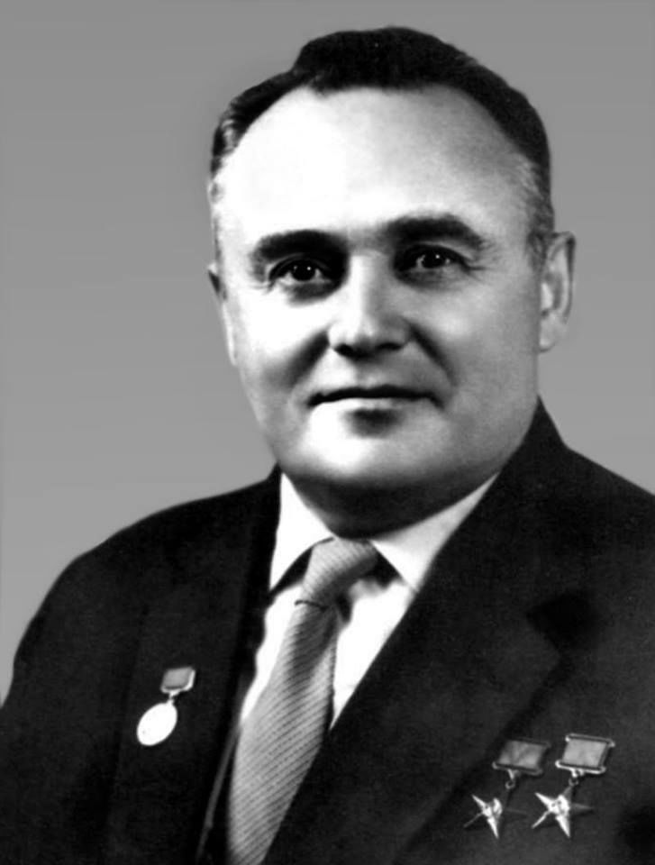
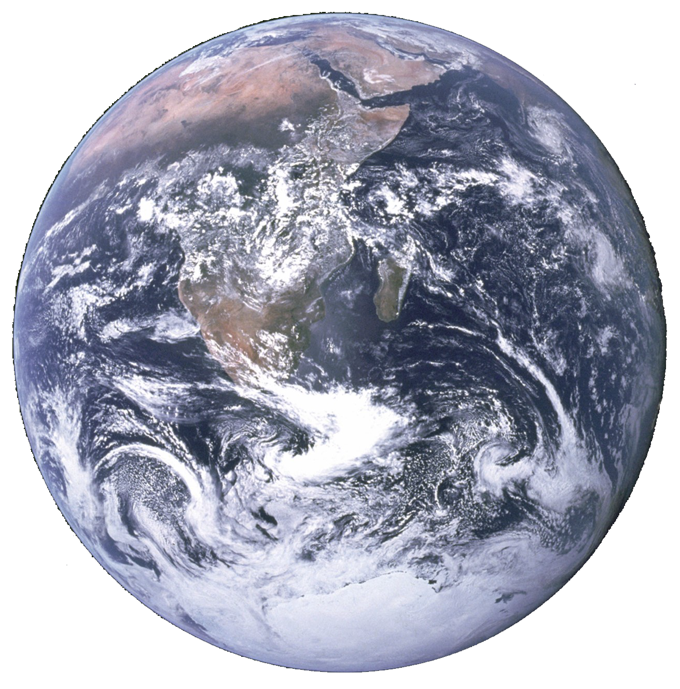
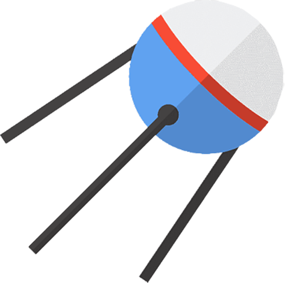
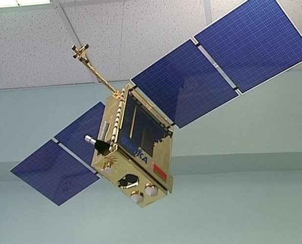
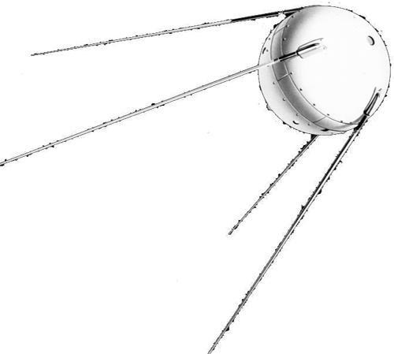

Королёв Сергей Павлович, советский конструктор
«Спутник-1» — первый в мире искусственный спутник Земли.
Cоветский космический аппарат, запущен на орбиту 4 октября 1957 года.
Кодовое обозначение спутника — «ПС-1» («Простейший Спутник-1»).
Впервые в мире спутник попал на орбиту планеты Земля 4 октября 1957 года Земля


Выберите фотографию первого СОВЕТСКОГО спутника

